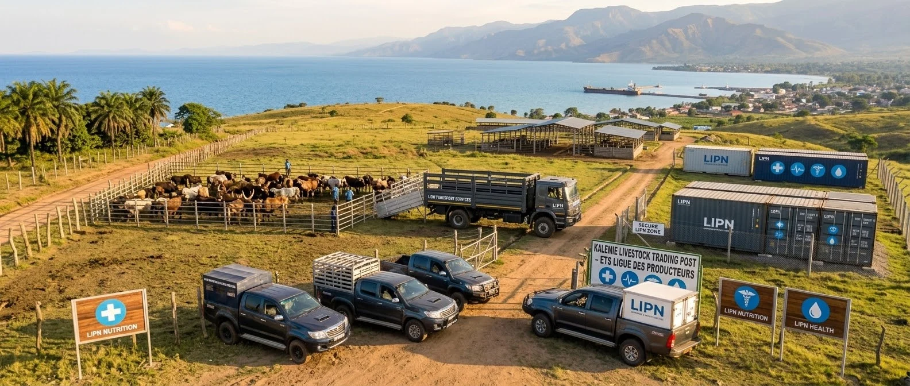
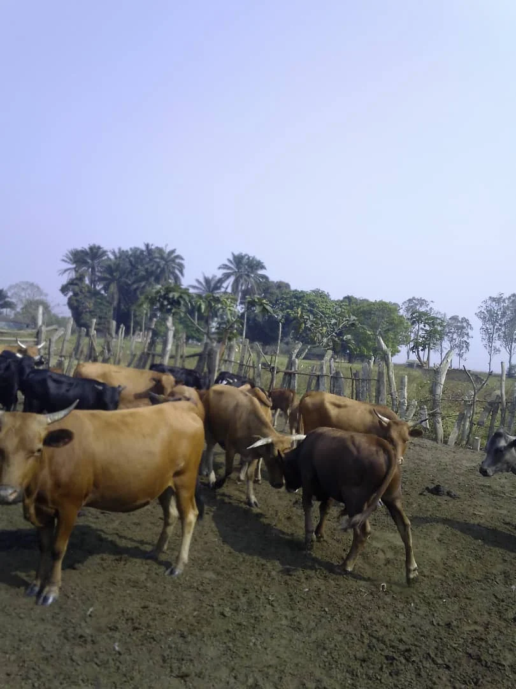

Transport & logistique
Acheminer ce qui compte, là où votre projet en a besoin.
- Transport secondaire d’intrants agricoles
- Fret lourd et métaux sur l’axe Manono – Kigoma
- Logistique humanitaire et de développement

ANCRÉS EN RDC. TOURNÉS VERS L’AVENIR.
Transport, approvisionnement et agro-business : un partenaire local pour faire avancer vos projets dans la région des Grands Lacs.
L’ENTREPRISE
ETS LIPN, la Ligue des Producteurs pour la Nutrition, accompagne le développement économique et la sécurité alimentaire en République Démocratique du Congo.
Fondée en 2022 et basée à Kalemie, notre entreprise est dirigée par Monsieur SALEH AKELO Nathanaël. Nous réunissons transport, approvisionnement et activités agricoles pour répondre aux besoins des entreprises, institutions et porteurs de projets.
NOS EXPERTISES
Quatre domaines complémentaires.
Une demande, un interlocuteur.
Acheminer ce qui compte, là où votre projet en a besoin.
Accompagner la continuité de vos opérations.
Renforcer les filières et la production locale.
Créer des liens entre les produits et les marchés.

NOTRE ENGAGEMENT
Producteurs, entreprises, communautés : nos activités connectent les besoins locaux aux moyens de production et d’approvisionnement.
NOTRE APPROCHE
Service, destination, quantités et calendrier : transmettez les informations clés de votre projet.
Notre équipe précise le périmètre, la disponibilité et les conditions adaptées à votre demande.
Les modalités et le devis sont convenus avec vous avant tout engagement.
PARLONS DE VOTRE PROJET
Remplissez le formulaire pour préparer votre demande, puis envoyez-la à notre équipe sur WhatsApp.
N° 90, Av. Okito, Q. Lukundula
Territoire de Kabalo, RDC
QUESTIONS FRÉQUENTES
Précisez le service, les quantités ou volumes, les lieux de départ et d’arrivée et votre calendrier. Ajoutez les contraintes particulières dans votre message.
Non. La demande ouvre un échange avec notre équipe. Les prix, délais et conditions sont à confirmer avant tout engagement.
Le formulaire prépare un message WhatsApp. Vous devez l’envoyer vous-même dans WhatsApp. Vous pouvez aussi joindre ETS LIPN par téléphone ou par e-mail.